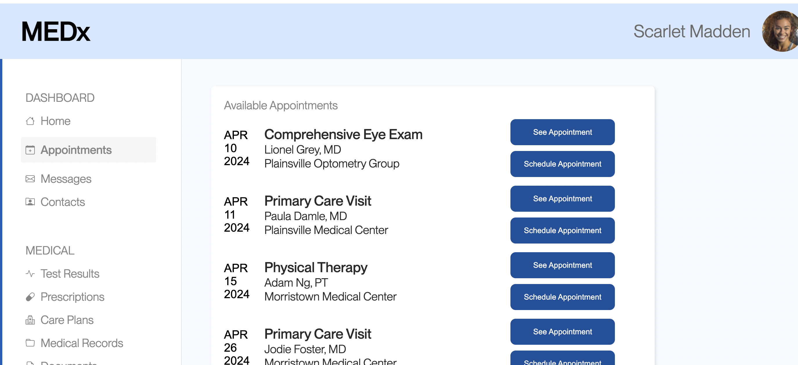

Below is the image of my modified Version B website. The colors of the buttons were changed and the spacing in between the date and the buttons in the scheduling column were decreased. Moreover, when buttons are hovered over, the buttons increase in size slightly.
Misclick Rate
Null Hypothesis: The misclick rate for Version B and Version A are not significantly different when compared to each other.
Alternative Hypothesis: The misclick rate for Version A is significantly higher than Version B.
Justification for alternative hypothesis: Since the buttons were made to have higher contrast and to have hover effects for enhanced indications of button selection, users should now find the website more readable and therefore should be able to complete the task more effectively. In other words, users should be able to complete the task with less misclicks.
Prediction: I predict that the misclick rate will decrease by a statistically significant amount due to the website improvements, which will lead my to reject the null hypothesis.
Time On Page
Null Hypothesis: The time spent on the page in milliseconds for Version B and Version A of the website are relatively the same, or not significantly different.
Alternative Hypothesis: The time spent on Version B is much lower than the time spent on Version A.
Justification for alternative hypothesis: Similar to the reasoning above, since the information on the website is less spaced out and more grouped together, and since the buttons are more interactive due to higher contrast and hover effects, the users should be able to find the correct appointment and complete the task in less amount of time because the website's spacing and visuals are easier to process.
Prediction: I predict that I will reject the null hypothesis because the time spent on Version B will be lower by statistically significant amount due to the improvements in the website creating a more efficient and user-friendly experience
Mouse Move Distance
The mouse move distance is the measurement of the total distance, in pixels, of the user's mouse movements. This metric is significant because mouse move distance should be lower if the user is more efficient with their interactions on the website.
Null Hypothesis: The average mouse move distance in pixels for Version B and Version A of the website are not statistically different.
Alternative Hypothesis: The average mouse move distance for Version A is significantly higher than the average mouse move difference of Version B.
Justification for alternative hypothesis: Since the website's middle column, with the scheduling information and buttons, are less spaced apart, the user's eye doesn't have to search as far to read and find the correct appointment. Since the user's reading time is optimized and the buttons are easier to find, the mouse move distance should decrease since the user does not have to search as much to complete their task. In other words, the user should be more efficient which should lead to less time spent physically using the mouse to search for the right appointment.
Prediction: I predict that the average mouse move distance for Version B will be lower by a statistically significant amount and will lead me to reject the null hypothesis.